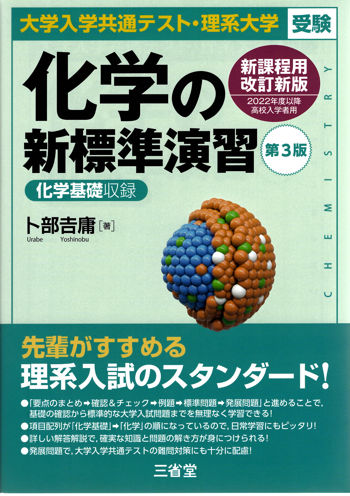

← ポータルに戻る
化学の新標準演習 (新課程)
全592ページ

はじめに・目次
p.1–5
▶
0
本書の構成
p.2
0
本書の利用法
p.3
0
目次
p.4
第1編 物質の構成
p.6–41
▶
1
物質の成分と元素
p.6
2
原子の構造と周期表
p.15
3
化学結合①
p.26
4
化学結合②
p.34
第2編 物質の変化
p.42–91
▶
5
物質量と濃度
p.42
6
化学反応式と量的関係
p.52
7
酸と塩基
p.63
8
中和反応と塩
p.71
9
酸化還元反応
p.81
第3編 物質の状態
p.92–138
▶
10
物質の状態変化
p.92
11
気体の法則
p.101
12
溶解と溶解度
p.112
13
希薄溶液の性質
p.120
14
コロイド
p.127
15
固体の構造
p.132
第4編 物質の変化と平衡
p.139–191
▶
16
化学反応と熱・光
p.139
17
電池
p.149
18
電気分解
p.158
19
化学反応の速さ
p.164
20
化学平衡
p.172
21
電解質水溶液の平衡
p.181
第5編 無機物質の性質と利用
p.192–239
▶
22
非金属元素①
p.192
23
非金属元素②
p.202
24
典型金属元素
p.210
25
遷移元素
p.219
26
金属イオンの分離と検出
p.228
27
無機物質と人間生活
p.236
第6編 有機化合物の性質と利用
p.240–292
▶
28
有機化合物の特徴と構造
p.240
29
脂肪族炭化水素
p.247
30
アルコールとカルボニル化合物
p.256
31
カルボン酸・エステルと油脂
p.264
32
芳香族化合物①
p.274
33
芳香族化合物②
p.281
34
有機化合物と人間生活
p.290
第7編 高分子化合物の性質と利用
p.293–336
▶
35
糖類(炭水化物)
p.293
36
アミノ酸とタンパク質, 核酸
p.302
37
プラスチック・ゴム
p.317
38
繊維・機能性高分子
p.326
別冊：解答・解説集
p.337–592